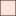

<!doctype html>
<html lang="en">
    <head>
        <meta charset="utf-8">
        <meta http-equiv="X-UA-Compatible" content="IE=edge">
        <meta name="viewport" content="initial-scale=1,user-scalable=no,maximum-scale=1,width=device-width">
        <meta name="mobile-web-app-capable" content="yes">
        <meta name="apple-mobile-web-app-capable" content="yes">
        <link rel="stylesheet" href="css/leaflet.css">
        <link rel="stylesheet" href="css/qgis2web.css"><link rel="stylesheet" href="css/fontawesome-all.min.css">
        <link rel="stylesheet" href="css/leaflet-search.css">
        <link rel="stylesheet" href="css/leaflet-control-geocoder.Geocoder.css">
        <link rel="stylesheet" href="css/leaflet-measure.css">
        <style>
        html, body, #map {
            width: 100%;
            height: 100%;
            padding: 0;
            margin: 0;
        }
        </style>
        <title></title>
    </head>
    <body>
        <div id="map">
        </div>
        <script src="js/qgis2web_expressions.js"></script>
        <script src="js/leaflet.js"></script>
        <script src="js/leaflet.rotatedMarker.js"></script>
        <script src="js/leaflet.pattern.js"></script>
        <script src="js/leaflet-hash.js"></script>
        <script src="js/Autolinker.min.js"></script>
        <script src="js/rbush.min.js"></script>
        <script src="js/labelgun.min.js"></script>
        <script src="js/labels.js"></script>
        <script src="js/leaflet-control-geocoder.Geocoder.js"></script>
        <script src="js/leaflet-measure.js"></script>
        <script src="js/leaflet-search.js"></script>
        <script src="data/AdditionalVotesNeededforLiberalWinperPoll_2.js"></script>
        <script>
        var highlightLayer;
        function highlightFeature(e) {
            highlightLayer = e.target;

            if (e.target.feature.geometry.type === 'LineString') {
              highlightLayer.setStyle({
                color: '#ffff00',
              });
            } else {
              highlightLayer.setStyle({
                fillColor: '#ffff00',
                fillOpacity: 1
              });
            }
        }
        var map = L.map('map', {
            zoomControl:true, maxZoom:28, minZoom:1
        })
        var hash = new L.Hash(map);
        map.attributionControl.setPrefix('<a href="https://github.com/tomchadwin/qgis2web" target="_blank">qgis2web</a> &middot; <a href="https://leafletjs.com" title="A JS library for interactive maps">Leaflet</a> &middot; <a href="https://qgis.org">QGIS</a>');
        var autolinker = new Autolinker({truncate: {length: 30, location: 'smart'}});
        var measureControl = new L.Control.Measure({
            position: 'topleft',
            primaryLengthUnit: 'meters',
            secondaryLengthUnit: 'kilometers',
            primaryAreaUnit: 'sqmeters',
            secondaryAreaUnit: 'hectares'
        });
        measureControl.addTo(map);
        document.getElementsByClassName('leaflet-control-measure-toggle')[0]
        .innerHTML = '';
        document.getElementsByClassName('leaflet-control-measure-toggle')[0]
        .className += ' fas fa-ruler';
        var bounds_group = new L.featureGroup([]);
        function setBounds() {
            if (bounds_group.getLayers().length) {
                map.fitBounds(bounds_group.getBounds());
            }
        }
        map.createPane('pane_GoogleSatellite_0');
        map.getPane('pane_GoogleSatellite_0').style.zIndex = 400;
        var layer_GoogleSatellite_0 = L.tileLayer('https://mt1.google.com/vt/lyrs=s&x={x}&y={y}&z={z}', {
            pane: 'pane_GoogleSatellite_0',
            opacity: 1.0,
            attribution: '<a href="https://www.google.at/permissions/geoguidelines/attr-guide.html">Map data ©2015 Google</a>',
            minZoom: 1,
            maxZoom: 28,
            minNativeZoom: 0,
            maxNativeZoom: 20
        });
        layer_GoogleSatellite_0;
        map.addLayer(layer_GoogleSatellite_0);
        map.createPane('pane_GoogleRoad_1');
        map.getPane('pane_GoogleRoad_1').style.zIndex = 401;
        var layer_GoogleRoad_1 = L.tileLayer('https://mt1.google.com/vt/lyrs=m&x={x}&y={y}&z={z}', {
            pane: 'pane_GoogleRoad_1',
            opacity: 1.0,
            attribution: '<a href="https://www.google.at/permissions/geoguidelines/attr-guide.html">Map data ©2015 Google</a>',
            minZoom: 1,
            maxZoom: 28,
            minNativeZoom: 0,
            maxNativeZoom: 20
        });
        layer_GoogleRoad_1;
        map.addLayer(layer_GoogleRoad_1);
        function pop_AdditionalVotesNeededforLiberalWinperPoll_2(feature, layer) {
            layer.on({
                mouseout: function(e) {
                    for (i in e.target._eventParents) {
                        e.target._eventParents[i].resetStyle(e.target);
                    }
                },
                mouseover: highlightFeature,
            });
            var popupContent = '<table>\
                    <tr>\
                        <td colspan="2">' + (feature.properties['Name'] !== null ? autolinker.link(feature.properties['Name'].toLocaleString()) : '') + '</td>\
                    </tr>\
                    <tr>\
                        <td colspan="2">' + (feature.properties['Descriptio'] !== null ? autolinker.link(feature.properties['Descriptio'].toLocaleString()) : '') + '</td>\
                    </tr>\
                    <tr>\
                        <td colspan="2">' + (feature.properties['Descriptio_1'] !== null ? autolinker.link(feature.properties['Descriptio_1'].toLocaleString()) : '') + '</td>\
                    </tr>\
                    <tr>\
                        <td colspan="2">' + (feature.properties['PollNum'] !== null ? autolinker.link(feature.properties['PollNum'].toLocaleString()) : '') + '</td>\
                    </tr>\
                    <tr>\
                        <td colspan="2">' + (feature.properties['Liberal'] !== null ? autolinker.link(feature.properties['Liberal'].toLocaleString()) : '') + '</td>\
                    </tr>\
                    <tr>\
                        <td colspan="2">' + (feature.properties['Conservative'] !== null ? autolinker.link(feature.properties['Conservative'].toLocaleString()) : '') + '</td>\
                    </tr>\
                    <tr>\
                        <td colspan="2">' + (feature.properties['NDP'] !== null ? autolinker.link(feature.properties['NDP'].toLocaleString()) : '') + '</td>\
                    </tr>\
                    <tr>\
                        <td colspan="2">' + (feature.properties['Total Votes'] !== null ? autolinker.link(feature.properties['Total Votes'].toLocaleString()) : '') + '</td>\
                    </tr>\
                    <tr>\
                        <td colspan="2">' + (feature.properties['Total Electors'] !== null ? autolinker.link(feature.properties['Total Electors'].toLocaleString()) : '') + '</td>\
                    </tr>\
                    <tr>\
                        <td colspan="2">' + (feature.properties['First Place Votes'] !== null ? autolinker.link(feature.properties['First Place Votes'].toLocaleString()) : '') + '</td>\
                    </tr>\
                    <tr>\
                        <td colspan="2">' + (feature.properties['First Place'] !== null ? autolinker.link(feature.properties['First Place'].toLocaleString()) : '') + '</td>\
                    </tr>\
                    <tr>\
                        <td colspan="2">' + (feature.properties['Second Place Votes'] !== null ? autolinker.link(feature.properties['Second Place Votes'].toLocaleString()) : '') + '</td>\
                    </tr>\
                    <tr>\
                        <td colspan="2">' + (feature.properties['Second Place'] !== null ? autolinker.link(feature.properties['Second Place'].toLocaleString()) : '') + '</td>\
                    </tr>\
                    <tr>\
                        <td colspan="2">' + (feature.properties['Third Place Votes'] !== null ? autolinker.link(feature.properties['Third Place Votes'].toLocaleString()) : '') + '</td>\
                    </tr>\
                    <tr>\
                        <td colspan="2">' + (feature.properties['Third Place'] !== null ? autolinker.link(feature.properties['Third Place'].toLocaleString()) : '') + '</td>\
                    </tr>\
                    <tr>\
                        <td colspan="2">' + (feature.properties['Margin: First - Second'] !== null ? autolinker.link(feature.properties['Margin: First - Second'].toLocaleString()) : '') + '</td>\
                    </tr>\
                    <tr>\
                        <td colspan="2">' + (feature.properties['Margin: First - Liberal'] !== null ? autolinker.link(feature.properties['Margin: First - Liberal'].toLocaleString()) : '') + '</td>\
                    </tr>\
                    <tr>\
                        <td colspan="2">' + (feature.properties['Turnout'] !== null ? autolinker.link(feature.properties['Turnout'].toLocaleString()) : '') + '</td>\
                    </tr>\
                    <tr>\
                        <td colspan="2">' + (feature.properties['% of Additional Votes Needed'] !== null ? autolinker.link(feature.properties['% of Additional Votes Needed'].toLocaleString()) : '') + '</td>\
                    </tr>\
                </table>';
            layer.bindPopup(popupContent, {maxHeight: 400});
        }
        function style_AdditionalVotesNeededforLiberalWinperPoll_2_0(feature) {
            var context = {
                feature: feature,
                variables: {}
            };
            // Start of if blocks and style check logic
            if (exp_AdditionalVotesNeededforLiberalWinperPoll_2rule0_eval_expression(context)) {
                  return {
                pane: 'pane_AdditionalVotesNeededforLiberalWinperPoll_2',
                opacity: 1,
                color: 'rgba(35,35,35,1.0)',
                dashArray: '',
                lineCap: 'butt',
                lineJoin: 'miter',
                weight: 1.0, 
                fill: true,
                fillOpacity: 1,
                fillColor: 'rgba(255,245,240,0.6509803921568628)',
                interactive: true,
            };
                }
                else if (exp_AdditionalVotesNeededforLiberalWinperPoll_2rule1_eval_expression(context)) {
                  return {
                pane: 'pane_AdditionalVotesNeededforLiberalWinperPoll_2',
                opacity: 1,
                color: 'rgba(35,35,35,1.0)',
                dashArray: '',
                lineCap: 'butt',
                lineJoin: 'miter',
                weight: 1.0, 
                fill: true,
                fillOpacity: 1,
                fillColor: 'rgba(254,214,196,0.6509803921568628)',
                interactive: true,
            };
                }
                else if (exp_AdditionalVotesNeededforLiberalWinperPoll_2rule2_eval_expression(context)) {
                  return {
                pane: 'pane_AdditionalVotesNeededforLiberalWinperPoll_2',
                opacity: 1,
                color: 'rgba(35,35,35,1.0)',
                dashArray: '',
                lineCap: 'butt',
                lineJoin: 'miter',
                weight: 1.0, 
                fill: true,
                fillOpacity: 1,
                fillColor: 'rgba(252,164,135,0.6509803921568628)',
                interactive: true,
            };
                }
                else if (exp_AdditionalVotesNeededforLiberalWinperPoll_2rule3_eval_expression(context)) {
                  return {
                pane: 'pane_AdditionalVotesNeededforLiberalWinperPoll_2',
                opacity: 1,
                color: 'rgba(35,35,35,1.0)',
                dashArray: '',
                lineCap: 'butt',
                lineJoin: 'miter',
                weight: 1.0, 
                fill: true,
                fillOpacity: 1,
                fillColor: 'rgba(252,112,80,0.6509803921568628)',
                interactive: true,
            };
                }
                else if (exp_AdditionalVotesNeededforLiberalWinperPoll_2rule4_eval_expression(context)) {
                  return {
                pane: 'pane_AdditionalVotesNeededforLiberalWinperPoll_2',
                opacity: 1,
                color: 'rgba(35,35,35,1.0)',
                dashArray: '',
                lineCap: 'butt',
                lineJoin: 'miter',
                weight: 1.0, 
                fill: true,
                fillOpacity: 1,
                fillColor: 'rgba(235,54,42,0.6509803921568628)',
                interactive: true,
            };
                }
                else if (exp_AdditionalVotesNeededforLiberalWinperPoll_2rule5_eval_expression(context)) {
                  return {
                pane: 'pane_AdditionalVotesNeededforLiberalWinperPoll_2',
                opacity: 1,
                color: 'rgba(35,35,35,1.0)',
                dashArray: '',
                lineCap: 'butt',
                lineJoin: 'miter',
                weight: 1.0, 
                fill: true,
                fillOpacity: 1,
                fillColor: 'rgba(186,20,25,0.6509803921568628)',
                interactive: true,
            };
                }
                else if (exp_AdditionalVotesNeededforLiberalWinperPoll_2rule6_eval_expression(context)) {
                  return {
                pane: 'pane_AdditionalVotesNeededforLiberalWinperPoll_2',
                opacity: 1,
                color: 'rgba(35,35,35,1.0)',
                dashArray: '',
                lineCap: 'butt',
                lineJoin: 'miter',
                weight: 1.0, 
                fill: true,
                fillOpacity: 1,
                fillColor: 'rgba(103,0,13,0.6509803921568628)',
                interactive: true,
            };
                }
            else {
                return {fill: false, stroke: false};
            }
        }
        map.createPane('pane_AdditionalVotesNeededforLiberalWinperPoll_2');
        map.getPane('pane_AdditionalVotesNeededforLiberalWinperPoll_2').style.zIndex = 402;
        map.getPane('pane_AdditionalVotesNeededforLiberalWinperPoll_2').style['mix-blend-mode'] = 'normal';
        var layer_AdditionalVotesNeededforLiberalWinperPoll_2 = new L.geoJson(json_AdditionalVotesNeededforLiberalWinperPoll_2, {
            attribution: '',
            interactive: true,
            dataVar: 'json_AdditionalVotesNeededforLiberalWinperPoll_2',
            layerName: 'layer_AdditionalVotesNeededforLiberalWinperPoll_2',
            pane: 'pane_AdditionalVotesNeededforLiberalWinperPoll_2',
            onEachFeature: pop_AdditionalVotesNeededforLiberalWinperPoll_2,
            style: style_AdditionalVotesNeededforLiberalWinperPoll_2_0,
        });
        bounds_group.addLayer(layer_AdditionalVotesNeededforLiberalWinperPoll_2);
        map.addLayer(layer_AdditionalVotesNeededforLiberalWinperPoll_2);
        var osmGeocoder = new L.Control.Geocoder({
            collapsed: true,
            position: 'topleft',
            text: 'Search',
            title: 'Testing'
        }).addTo(map);
        document.getElementsByClassName('leaflet-control-geocoder-icon')[0]
        .className += ' fa fa-search';
        document.getElementsByClassName('leaflet-control-geocoder-icon')[0]
        .title += 'Search for a place';
        var baseMaps = {};
        L.control.layers(baseMaps,{'% Additional Votes Needed for Liberal Win (per Poll)<br /><table><tr><td style="text-align: center;"></td><td>0%</td></tr><tr><td style="text-align: center;"></td><td>0% - 5%</td></tr><tr><td style="text-align: center;"></td><td>5% - 10%</td></tr><tr><td style="text-align: center;"></td><td>10% - 15%</td></tr><tr><td style="text-align: center;"></td><td>15% - 20%</td></tr><tr><td style="text-align: center;"></td><td>20% - 30%</td></tr><tr><td style="text-align: center;"></td><td>30% - 100%</td></tr></table>': layer_AdditionalVotesNeededforLiberalWinperPoll_2,"Google Road": layer_GoogleRoad_1,"Google Satellite": layer_GoogleSatellite_0,}).addTo(map);
        setBounds();
        map.addControl(new L.Control.Search({
            layer: layer_AdditionalVotesNeededforLiberalWinperPoll_2,
            initial: false,
            hideMarkerOnCollapse: true,
            propertyName: 'PollNum'}));
        document.getElementsByClassName('search-button')[0].className +=
         ' fa fa-binoculars';
        resetLabels([layer_AdditionalVotesNeededforLiberalWinperPoll_2]);
        map.on("zoomend", function(){
            resetLabels([layer_AdditionalVotesNeededforLiberalWinperPoll_2]);
        });
        map.on("layeradd", function(){
            resetLabels([layer_AdditionalVotesNeededforLiberalWinperPoll_2]);
        });
        map.on("layerremove", function(){
            resetLabels([layer_AdditionalVotesNeededforLiberalWinperPoll_2]);
        });
        </script>
    </body>
</html>
